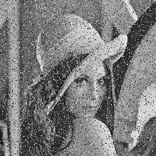
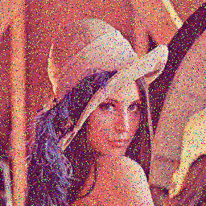
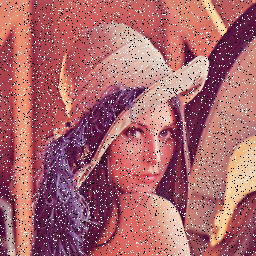
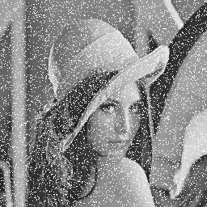
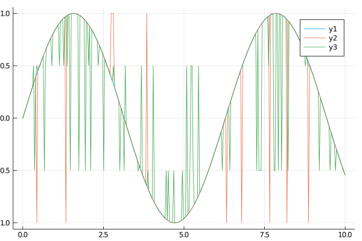

Salt and Pepper
Salt and Pepper noise in general is a noise which modifies a pixel with two different values of noise. Usually it sets randomly black and white spots on the image.
Usage
Arrays, Grayscale Images and RGB Images
For arrays, grayscale images (Array{<:Gray}) and RGB images (Array{<:RGB}) we provide the following method:
salt_pepper(X; salt_prob=0.5, salt=1.0, pepper=0.0[, prob])This methods sets the salt or pepper noise to each pixel and channel individually. In the case of RGB images, this means that every colorchannel of a pixel receives its own salt or pepper. The array X must be provided. prob is a optional argument following X. This value is the probability that a individual pixel is affected by noise. In the case a pixel receives a noise, we either choose salt or pepper. salt_prob is a keyword argument describes the probability that a choosen pixel will be affected by salt. 1-salt_prob describes therefore the probabilty for pepper. Additionally we can also choose the numerical value for salt and pepper using the keyword argument salt and pepper respectively. For RGB images the effect is more a color effect since we affect each channel individually and not only the pixel.
RGB images each Channel the same
For RGB images (Array{<:RGB}) we also provide the following:
salt_pepper_chn(X; salt_prob=0.5, salt=1.0, pepper=0.0[, prob])This method, in contradiction to the previous one, doesn't add the noise to each colorchannel of a element independently but rather sets the noise value for each channel of a pixel. For RGB this introduces real black and white spots.
Examples
Images
Some examples with images.
using Noise, TestImages, Images
img_gray = testimage("lena_gray_256")
img_color = testimage("lena_color_256")
img_gray_noise = salt_pepper(img_gray)
img_color_noise = salt_pepper(img_color)
img_color_channel_noise = salt_pepper_chn(img_color)
# 30% of pixels are black or white
img_gray_noise_heavy = salt_pepper(img_gray, 0.3)
# 10% of pixels are white
img_gray_noise_white = salt_pepper(img_gray, 0.1, salt_prob=1)
# 10% of pixels are gray
img_gray_noise_gray = salt_pepper(img_gray, 0.1, salt_prob=0, pepper=0.7)The images are in the same order as the commands are. The middle image has applied noise to each color channel individually, in the right the same noise is added to all channels of a pixel. Therefore the midle image has a color noise, the noise in the image in the right corresponds to some intensity noise. 10% noise means that only 10% of all pixels are noisy, by default this means roughly 5% white pixels and 5% black pixels.
| Gray image with 10% noise | RGB image with channelwise noise | RGB image with pixelwise noise |
|---|---|---|
|  |  |  |
| Gray image with 30% salt or pepper | Gray image with 10% salt | Gray image with 10% gray |
|---|---|---|
|  |
1D Arrays
Some examples with 1D arrays.
using Noise, Plots
x = LinRange(0.0, 10.0, 300)
y = sin.(x)
y_noise = salt_pepper(y, 0.05, pepper=-1.0)
y_noise_2 = salt_pepper(y, 0.2, pepper=-0.5, salt=0.5)
plot(x,y);
plot!(x, y_noise);
plot!(x, y_noise_2);/home/travis/.julia/packages/GR/yMV3y/src/../deps/gr/bin/gksqt: error while loading shared libraries: libQt5Widgets.so.5: cannot open shared object file: No such file or directory
connect: Connection refused
GKS: can't connect to GKS socket application
GKS: Open failed in routine OPEN_WS
GKS: GKS not in proper state. GKS must be either in the state WSOP or WSAC in routine ACTIVATE_WSAs you can see we are able to introduce salt and pepper noise the same way to 1D arrays. 